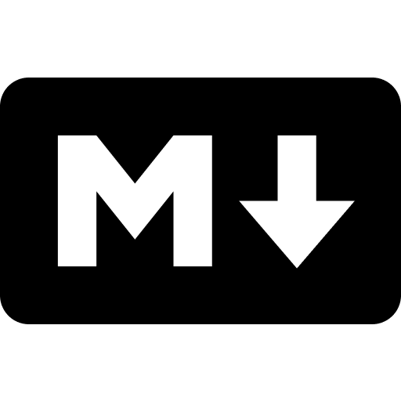

Built for trust. Made to last.
A tool that touches your content should earn it. Here’s how MarkSnip does.
Runs locally
Conversion happens in your browser. Nothing is uploaded to a server.
Plaintext is portable
Your clips are .md files. They outlive any single app.
Opt-in only
AI and the local CLI send data only when you switch them on.
Free & open source
Inspect it, fork it, trust it. The whole extension is on GitHub.

MarkSnipWebpage to Markdown·Chrome & Firefox